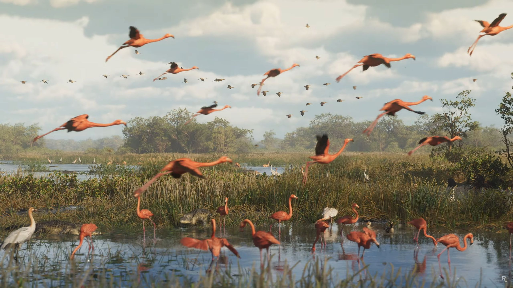

- 💮
- 人与自然需要和谐共存。
- 🌸
- 无径之林，常有情趣；无人之岸，几多惊喜；世外桃源，何处寻觅；聆听涛乐，须在海里。爱我爱你，更爱自然。
- 🌺
- 河水静静地流着，我们在水中尽情地玩着，笑声、水声融在了一起，人与自然形成了一幅和谐的画面。几片黄树叶、红树叶从水面上职过，贴着小河的脸，抒写着秋的诗句。
- 🌻
- 保护生物多样性就是保护人类生存的伙伴。
- 🌷
- 随着社会的文明进步，人与自然也日臻和谐，与动物交朋友的人越来越多，而且会让你逐步感受到和狗交朋友更可靠。它不计较主人的身份，无论富有还是贫穷，只要你对它好，它就会永远忠实于你，绝无二心。
- 🌼
- 我们再次回归地球，思考她的美，感知奇迹和谦卑，是一件有益且必要的事情。
- 🌱
- 直到以苍穹为衣，以星辰作冠，血脉里流淌着海水，人们才能真正感受世界的美。
- 🪴
- 不知道是音乐如心情，还是心情如音乐！也或许音乐与心情融为了一体！人与自然也融为了一体！音乐本身就是生活--生活也就是音乐。
- ☘️
- 请爱护每一棵树，否则我们看到的将是泛滥的穿龚扁夹壮蝗憋伟铂连洪水和贫瘠的沙漠。
- 🍀
- 以天地之心存心，以生灵之命立命。
-

人类对自然的依赖远远超出了物质和物质的寄托，还包括了了对自然，审美，智力，认知甚至精神意义和满足的渴望。在人类长期的进化过程中，我们在基因的遗传上就有偏好某些自然环境的一种机制，这些环境能够帮助人类获得更好的生存机会，规避危险以及获得食物等。比如：我们一般居住的地方都喜欢依山傍水，因为有水源有山，获得食物和机会会变得非常的大，生存的可能性也会变大。同理：为什么猫猫狗狗等生物对我们有独特吸引力，该假说就认为是在人类很早之前，与该类生物相处会得到一定的生存益处，所以我们对这些自然生物会抱有天生的好感。
-

置身于自然中观察自然事物也有促进作用，最常见的就是林间漫步。通过观察生态自然提高自己的生态知觉力，有利于我们注意力的集中和想象力的提升，对我们的生理健康也有帮助。同时可以让我们从快速生活中的看个大转变到观察仔细的事物。当我们发现一棵树上不再是一颗树，而是有很多片不同叶子的树，不同形态的树的时候，我们就能够发觉我们与自然的联系以及我们内心本源的生态自我。
-

我们对于音乐的探索以及发展到新世纪音乐的阶段，新世纪音乐主要是通过采集自然音来使身心得以放松，灵魂得以升华的一个形式。例如班得瑞乐队的音乐。该音乐主要是纯音乐为主，有雪山呼呼的声音，有溪水潺潺的声音，也有雨滴虫鸣，以及动物的叫声等等组成。这种疗法可以起到稳定情绪，帮助睡眠，以及提高想象力和恢复精力的作用，这种疗法不仅用于自然疗愈中，也被广泛运用到心理咨询治疗以及音乐治疗等等领域。
-

园艺疗法是通过专业人士, 以植物和园艺活动作为媒介, 实现某些身心治疗目标的一种辅助疗法。形式有许多种，例如花园冥想，以及插花艺术，还有亲身体验种植等活动。有研究表明，经过园艺疗法的在身心健康以及人际关系上起到了一定的恢复和促进作用，同时降低了抑郁情绪的发生和攻击行为的发生，对于心理健康发展有很大的帮助。
♥ 展示您的意见 ♥
回车 / 点我发射
-
 匿名用户哦 ♥ :你好, 这里是属于me的离线版本评论区! 也就是刷新一下就没有了 看着乐呵乐呵就行了! 新评论在最下面显示
匿名用户哦 ♥ :你好, 这里是属于me的离线版本评论区! 也就是刷新一下就没有了 看着乐呵乐呵就行了! 新评论在最下面显示 -
匿名用户哦 ♥ :hello world